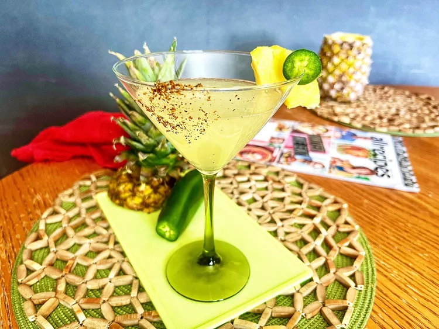

Pineapple Jalapeño Margarita

Description
- 2 slices fresh pineapple, plus more for garnish
- 2 slices fresh jalapeno, or more to taste, plus 1 slice for garnish
- 2 ounces tequila
- 2 ounces fresh pineapple juice
- 1 ounce fresh lime juice
- 1 ounce fresh orange juice
- 1 oz ice
- 1 lime wedge
- 2 tablespoons tajin seasoning, for glass
Ingredients
Directions
-
Combine pineapple and jalapeno slices in a cocktail shaker and muddle. Pour in tequila,
pineapple juice, lime juice, and orange juice. Fill with ice and shake until well combined.
Set aside.
-
Place tajin on a plate. Rub one side of glass with lime slice and roll in tajin. Strain
margarita into the prepared glass and garnish with pineapple slice and jalapeno slice if
desired.
Chef's Note:
Home